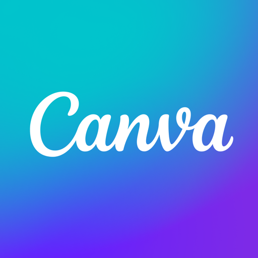
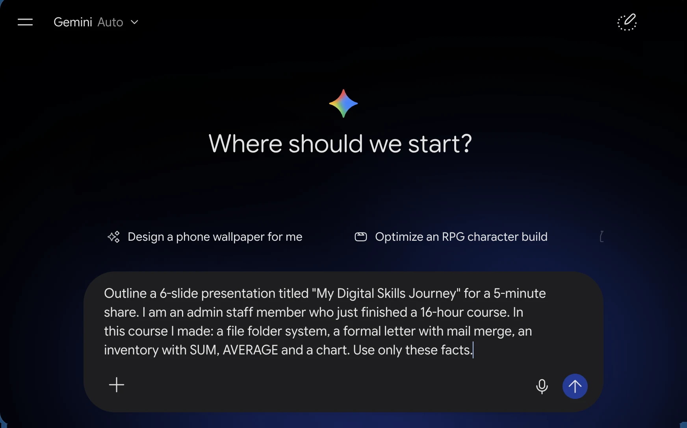
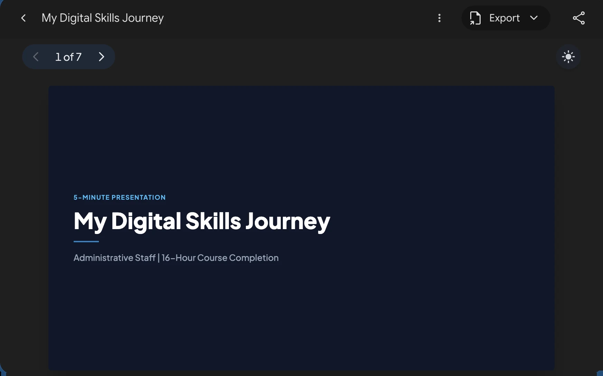
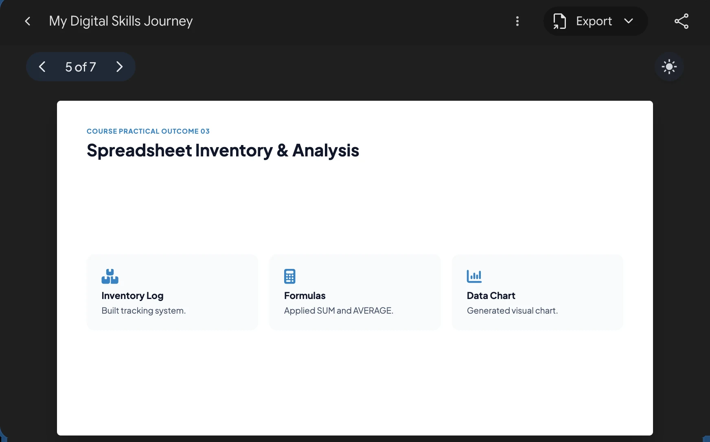
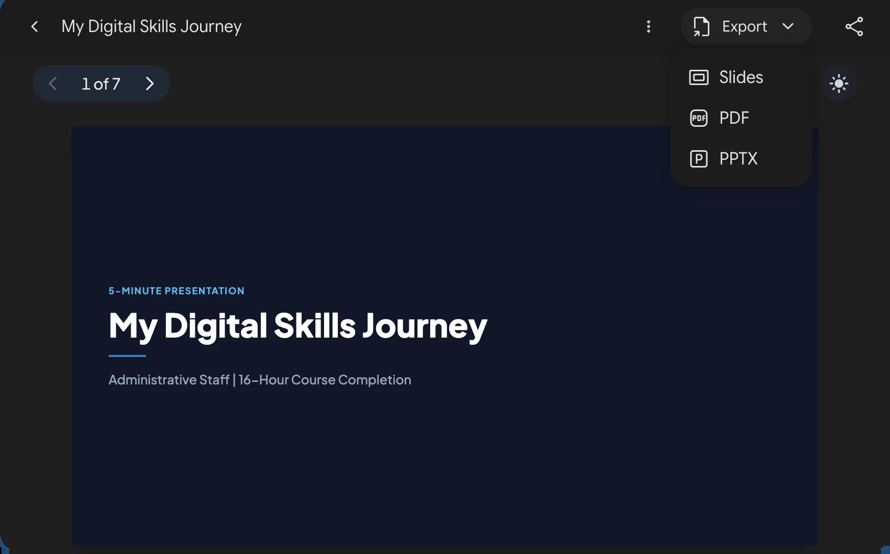

PowerPoint · Designer
Home › Designer suggests layouts for the current slide, especially after you add a picture or chart. Also in PowerPoint for the web.
Copilot can draft a deck or outline from a prompt, on Copilot-enabled Microsoft 365 plans.
Google Slides · Gemini
The Gemini side panel can draft slides, suggest wording, and create images, on eligible Google Workspace or Google AI plans.
Without it: use Slide › Apply layout and a consistent theme.

Canva · AI tools
Magic Design turns a prompt into a draft deck; Magic Write drafts text. Free accounts get limited uses.
Download as .pptx or PDF when you're done.
Three helpers. Most office desktops have PowerPoint, so Designer is the one you'll likely use for Lab 4. It needs internet and a Microsoft account; PowerPoint for the web has it too.
Be honest about availability: Copilot and Gemini features depend on the licence. Some of you will see them, some won't. That's fine; Lab 4 needs the layout assistant, not a full AI deck.
Features and menu names change often. If a button has moved, search the app's help for "Designer" or "Gemini".




 Google Gemini web app, free account. Sample answer; yours will differ. Copilot, Canva's AI or any assistant your office allows work the same way.
Google Gemini web app, free account. Sample answer; yours will differ. Copilot, Canva's AI or any assistant your office allows work the same way.
- Give AI your real facts, and end with "Use only these facts."
- Check the basics: we asked for 6 slides and got 7. Cut or merge one.
- Highlight anything vague or not done ("Built tracking system") and replace it with your real example. Remove every [placeholder].
- Then Export to Slides or PPTX, or type your titles into your Lab 4 file.
Start the 6-minute timer. Paste the prompt into the chat so they can copy it.
Point out the last sentence of the prompt: "Use only these facts." It reduces made-up content, but doesn't eliminate it, so the edit step still matters.
The screens are a real Gemini answer to this prompt (free account): it made 7 slides, not 6, and wrote vague lines like "Built tracking system". Answers differ every time, so walk the four checks on whatever comes back. Export offers Slides, PDF and PPTX.
At the end, read a few of the changed lines from the chat. Praise specific, true edits like "I can now make a chart from my inventory."
Recap · Topic 4.7
AI suggests. You decide, check and own it.
Design helpers
Designer, Copilot, Gemini, Canva: fast layouts and outlines, availability varies.
Human edits
Keep the structure; replace anything untrue, unproven or a placeholder.
Ethics + privacy
Honest charts, no fake people, label AI images, no personal data in prompts.
Next · Lab 4: Multimedia Presentation and Ethical Design, then our course closing.
One-line summary: AI suggests; you decide, check and own it.
Ask for one reaction: if you now have an outline and at least one slide improved by AI with your text unchanged.
Now let's look at Lab 4 properly, because everything from 4.1 to 4.7 comes together in it.